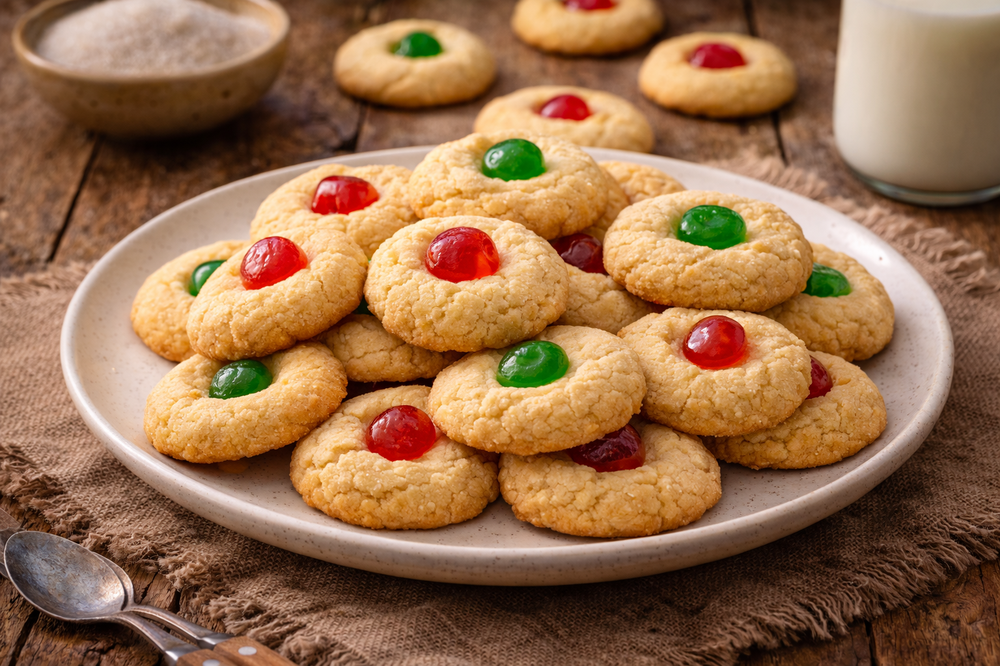
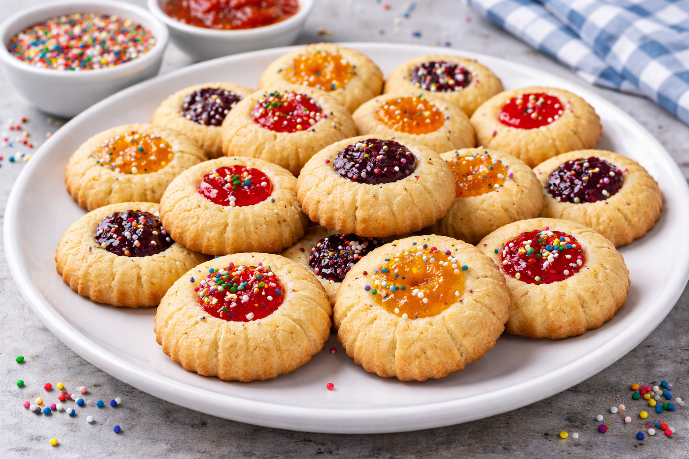

Main Page
Mantecaditos Recipe

Mantecaditos are traditional Dominican butter cookies that are especially popular during Christmas
and special gatherings. They are soft, crumbly, and slightly sweet, with a delicate vanilla flavor and a
melt-in-your-mouth texture. Often baked in colorful paper cups and topped with sprinkles, they are
simple but nostalgic — a classic treat found in Dominican bakeries and family celebrations.
Ingredients
- 2 cups all-purpose flour
- 1 cup butter, softened
- 1 cup sugar
- 2 eggs
- 1 teaspoon vanilla extract
- 1 teaspoon baking powder
- ¼ teaspoon salt
- Sprinkles (optional)
Steps
- Preheat your oven to 350°F (175°C).
- In a large bowl, cream the butter and sugar together until light and fluffy.
- Add the eggs one at a time, mixing well after each addition.
- Stir in the vanilla extract.
- In a separate bowl, combine flour, baking powder, and salt.
- Gradually add the dry ingredients to the wet mixture, mixing until smooth.
- Place paper baking cups on a baking tray.
- Spoon the batter evenly into each cup, filling about ¾ full.
- Add sprinkles on top if desired.
- Bake for 18–22 minutes, or until the edges are lightly golden.
- Let cool before serving.

Main Page